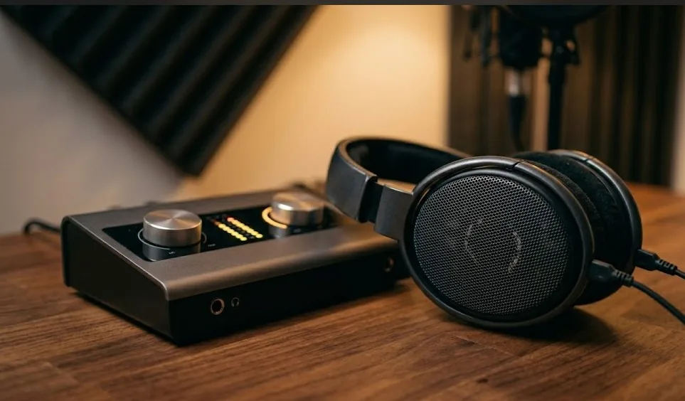
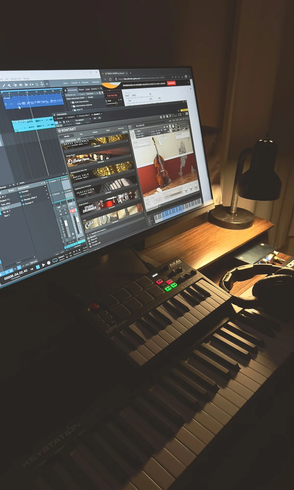

Miks i mastering brzmią jak dwa tajemnicze etapy, do których trzeba talentu, drogiego sprzętu i lat doświadczenia. W praktyce są to umiejętności - i jak każde umiejętności, można się ich nauczyć. Nie ma jednej jedynej drogi, jest za to kilka pułapek, w które wpada większość osób zaczynających tę przygodę. Ten przewodnik pokaże Ci, od czego zacząć, jak ćwiczyć i czego unikać - zanim wydasz pieniądze na kursy za kilka tysięcy złotych.
Czym jest miks i mastering - krótkie przypomnienie
Zanim zaczniesz się uczyć, warto mieć jasność co do tego, czym w ogóle są oba etapy i co je odróżnia. Miks to proces łączenia wielu ścieżek (wokalu, bębnów, gitar, syntezatorów) w jedną spójną całość. Regulujesz głośności, przestrzeń stereo, barwę dźwięku - używasz do tego głównie EQ, kompresji i efektów przestrzennych (reverb, delay).
Mastering to ostatni etap przed publikacją. Pracujesz już nie na wielu ścieżkach, ale na gotowym miksie stereo. Twój cel to sprawić, żeby utwór brzmiał dobrze na różnych urządzeniach, miał odpowiednią głośność i pasował brzmieniowo do innych nagrań. Szczegółowe różnice między tymi etapami omówiliśmy w osobnym artykule: miks a mastering - czym się różnią?
Ważne: Naukę miksu i masteringu warto zacząć od miksu. Mastering bez solidnych podstaw miksu to polerowanie niedokończonego obrazu - możesz tylko ograniczać szkody, nie poprawiać brzmienia. Najpierw naucz się miksować, mastering przyjdzie naturalnie.
Krok 1 - najpierw naucz się słuchać
Największy błąd początkujących to ruszanie suwakami, zanim nauczą się słyszeć. Miks to praca uszami, nie oczami. Zanim zaczniesz miksować, musisz wiedzieć, czego słuchać.
Zacznij od analizy gotowych nagrań, które brzmią tak, jak chciałbyś brzmieć. Słuchaj aktywnie - nie jako słuchacz, ale jako realizator. Zadawaj sobie pytania: gdzie siedzi bas? Jak głęboka jest perkusja? Czy wokal jest z przodu czy z tyłu miksu? Ile reverbu słychać na gitarze? Czy różne instrumenty zajmują różne miejsca w stereo?
To ćwiczenie zajmuje zero złotych i można je robić codziennie. Zanim otworzysz DAW, przesłuchaj jeden utwór z gatunku, który Cię interesuje - w słuchawkach studyjnych lub na monitorach, nie przez głośnik telefonu.
Krok 2 - sprzęt, który naprawdę potrzebujesz
Nie potrzebujesz drogiego studia ani zestawu sprzętu za dziesiątki tysięcy złotych. Minimalne wymagania do nauki miksu to:
- DAW - program do produkcji i miksowania. Reaper kosztuje ok. 60 USD i ma 60-dniowy bezpłatny okres próbny. Alternatywnie: bezpłatny GarageBand na Mac, wersja próbna Ableton Live lub FL Studio. Szczegółowy przegląd znajdziesz w artykule o najpopularniejszych programach do produkcji muzyki.
- Słuchawki studyjne - tzw. monitorowe, o możliwie płaskiej charakterystyce częstotliwościowej. Słuchawki konsumenckie podbijają basy i góry, co fałszuje obraz tego, co miksuje. Modele w przedziale ok. 200-400 zł już dają solidny punkt odniesienia.
- Interfejs audio - przydatny, jeśli nagrywasz instrumenty lub wokal. Do samej nauki miksowania na gotowych stem-ach możesz obejść się bez niego.
Krok 3 - kolejność nauki ma znaczenie
Większość osób uczy się miksowania chaotycznie - oglądają losowe tutoriale na YouTube i skaczą między tematami. To skutecznie spowalnia postępy. Jest logiczna kolejność, w jakiej warto poznawać narzędzia:
Etap 1 - organizacja i głośności
Zanim sięgniesz po EQ czy kompresję, naucz się organizować projekt. Pogrupuj ścieżki (bębny, bas, instrumenty, wokal), ustaw wstępne głośności faderami i zbalansuj miks "na sucho" - bez żadnych efektów. Dobry balans głośności to fundament, na którym reszta miksu ma stać.
Etap 2 - EQ (equalizer)
EQ to narzędzie do kształtowania barwy dźwięku - wycinasz częstotliwości, które przeszkadzają, podbijasz te, które chcesz wyeksponować. To pierwsze narzędzie, które warto opanować, bo bezpośrednio wpływa na to, czy instrumenty mieszczą się w miksie i nie walczą ze sobą o te same pasma. Mamy osobny artykuł o tym, czym jest EQ i jak go używać w miksie.
Etap 3 - kompresja
Kompresja kontroluje dynamikę - wyrównuje głośność tak, żeby żaden instrument nie wyskakiwał zbyt mocno ani nie gubił się w miksie. Zacznij od kompresji wokalu - tu efekty są najbardziej słyszalne. Więcej w artykule o kompresji w muzyce.
Etap 4 - przestrzeń (reverb i delay)
Reverb i delay nadają głębię i trójwymiarowość. To narzędzia, które łatwo przedawkować na początku - "topienie" wszystkiego w reverbię to klasyczny błąd. Ucz się ich używać oszczędnie, zaczynając od wokalu i talerzy.
Etap 5 - mastering
Dopiero gdy opanujesz miks, zabieraj się za mastering. Na tym etapie używasz limitera, delikatnej kompresji na bus stereo i EQ korygującego ogólną barwę. Twój cel: głośność porównywalna z komercyjnymi nagraniami i spójna barwa na różnych odtwarzaczach.
Zasada jednego narzędzia: Przez pierwsze tygodnie używaj tylko jednego narzędzia naraz. Najpierw tylko faderów, potem tylko EQ, potem tylko kompresji. Izolacja pozwala szybciej "zapamiętać" jak brzmią poszczególne narzędzia.
Krok 4 - jak ćwiczyć (konkretnie)
Teorię można opanować czytając artykuły i oglądając tutoriale. Ale miks to umiejętność manualna - uczysz się go robiąc, nie czytając. Kilka ćwiczeń, które faktycznie działają:

Dekonstrukcja gotowego miksu
Pobierz stem-y jakiegoś opublikowanego nagrania i spróbuj zmiksować je od zera. Potem porównaj swój wynik z oryginałem: co brzmi inaczej? Skąd ta różnica? Dlaczego bas w oryginale jest bardziej "zwarty"? To najszybsza metoda nauki przez analizę.
Miks tego samego materiału co tydzień
Wróć do tych samych stem-ów za tydzień lub miesiąc i zmiksuj je jeszcze raz, bez patrzenia na poprzednią wersję. Porównaj - co zmieniłeś? Co słyszysz, czego wcześniej nie słyszałeś? To dobry miernik postępów.
Odsłuchy na różnych urządzeniach
Eksportuj miks i słuchaj go kolejno: w słuchawkach studyjnych, przez głośnik telefonu, w samochodzie, przez tanie słuchawki douszne. Jeśli brzmi dobrze wszędzie - jesteś na dobrej drodze. Ten temat rozwijamy w artykule o tym, dlaczego miks brzmi inaczej na głośnikach.
Skąd czerpać wiedzę - zasoby bez przepłacania
Nie musisz wydawać dużych pieniędzy na kursy, żeby nauczyć się miksować. Dobre i bezpłatne zasoby wystarczą na długo:

- YouTube - kanały In The Mix, Produce Like A Pro, Mastering The Mix to setki godzin konkretnych tutoriali. Szukaj materiałów skupionych na konkretnym narzędziu lub problemie, nie ogólnych "jak zrobić miks".
- Dokumentacja DAW - każdy producent oprogramowania (Ableton, FL Studio, Reaper) ma obszerną, bezpłatną dokumentację i oficjalne tutoriale.
- Forum Gearspace - ogromne anglojęzyczne forum realizatorów i producentów. Wiele wątków o konkretnych problemach miksowych, sprzęcie i technikach.
- Stem-y do ćwiczeń - Cambridge Music Technology udostępnia bezpłatne wielościeżkowe nagrania do ćwiczenia miksu. Szukaj "Cambridge multitrack" - znajdziesz dziesiątki projektów z różnych gatunków.
Kursy za kilka tysięcy złotych mogą przyspieszyć naukę - ale tylko jeśli wiesz już wystarczająco dużo, żeby z nich skorzystać. Na samym początku bezpłatne materiały i regularne ćwiczenie dadzą Ci więcej niż najdroższy kurs bez praktyki.
Najczęstsze pułapki na początku nauki
Kilka rzeczy, przez które większość osób traci czas lub zniechęca się niepotrzebnie:
- Zbyt wiele narzędzi naraz. Otworzysz DAW, zobaczysz 40 wtyczek i nie będziesz wiedzieć od czego zacząć. Odpowiedź: zacznij od EQ i kompresji na wokalu. Nic więcej przez pierwsze tygodnie.
- Słuchanie przez głośnik laptopa. Nie masz szans na ocenę basu, stereo ani dynamiki. Minimum to słuchawki studyjne lub monitory.
- Miksowanie godzinami bez przerwy. Po ok. 30-45 minutach aktywnego słuchania ucho się "zmęczy" i przestajesz słyszeć różnice. Rób przerwy i wracaj świeżym uchem.
- Porównywanie się z zawodowcami. Profesjonalne nagrania na Spotify często przeszły przez ręce realizatora z 20-letnim doświadczeniem. To nie jest Twój punkt startowy - to kierunek.
- Kupowanie wtyczek zamiast ćwiczenia. Wbudowane procesory w Reaperze, Abletonie czy Logic są wystarczające na lata nauki. Sprzęt i wtyczki kupuj, gdy już wiesz, czego szukasz.
Kiedy warto sięgnąć po płatny kurs?
Kursy mają sens, gdy masz już pewne podstawy i szukasz konkretnej odpowiedzi na konkretne pytanie. Dobry płatny kurs to nie "wszystko o miksie od zera" - to "jak miksować bębny w muzyce hip-hopowej" albo "jak masterować na potrzeby streamingu". Im bardziej szczegółowy temat, tym więcej wartości możesz wynieść.
Przed zakupem sprawdź: czy kurs ma demo lub bezpłatny fragment? Czy prowadzący pokazuje pracę na prawdziwym materiale, czy tylko omawia teorię? Czy są ćwiczenia do samodzielnego wykonania?
Jeśli dopiero startujesz z produkcją muzyki i miks jest dla Ciebie pojęciem abstrakcyjnym, warto zacząć od fundamentów. Przeczytaj poradnik jak zacząć produkcję muzyki - tam opisujemy pierwszy kompletny setup i pierwsze kroki w DAW.